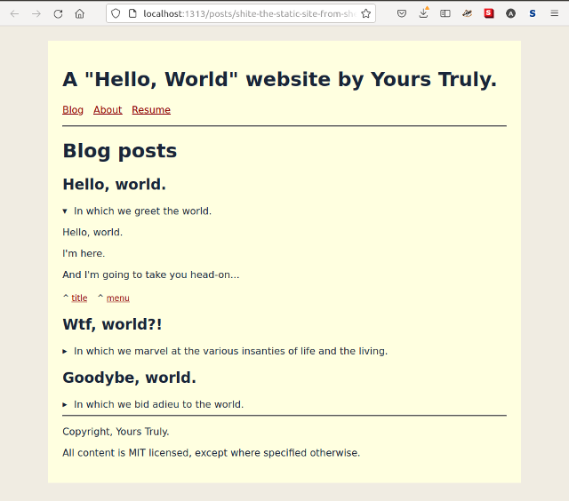
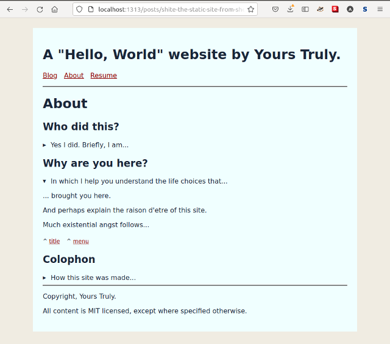
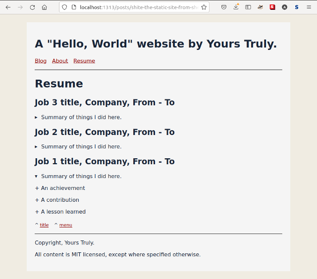

Contents
We've long dreamed of lovingly hand-crafting our wee home on the Internet, you and I. We would make it ultramodern yet ultralight, simple yet beautiful. Something not WordPress because that's so last century. (Seriously, just go to WordPress.)
No. We were committed. We would do it for the sake of craftsmanship and the environment and World Peace. And that's how we found ourselves awake at 2 A.M., having absurd conversations 1 with Distant Internet Strangers…
You (loudly): "BOOTSTRAP? Yes, I want to bootstrap my website."
D.I.S. (miming): "No, no. You. Need. Bootstrap."
You: "I whaaat?"
D.I.S.: "… aaannd NODE JAY ESS too…"
You can't fathom why there are a jillion "CMSes", fifty "build tools", and nine dozen "static site generators", each with their own bespoke "templating system".
You are this close to DM-ing the first person who green-dots in your current Slack; "Please, can you help me? I didn't know. I'm so sorry. For everything. I just wanted a website… Please???.".
Okay, then…
"Screw that, gimme a site already"
Certainly!
site template, hand-rolled and infused with pure html.energy. Just save each page and use any text editor to modify it.
shite, the tiny static site builder from shell. When the copy-pasta gets too much, a tiny Shell script can go a long way.
TL;DR? Copy, use, modify at will.
L;R? Follow me and I'll show you how deep the rabbit hole goes.
What's the plan?
To your credit, you will struggle and muddle and slap together a reasonable site. I know I did. But you may also feel uneasy about the magic you used. I know I did.
Not today, though. Today we simplify, demystify, flow effortlessly, and end up with…
Part 1: This blog:
- devise a decent, dead-simple HTML page template that you can fully grok, and copy away to website success
Part 2: Next blog:
grasp the problem space of making a static website (or, a website),
make shite: the website generator from Shell, to automate the boring parts,
do nothing that will surprise a Perl/PHP gentleperson hacker from the last century. 'twas a far more civilized time 2. I know because I'm from the last century.
"Be water, my friend."
— Bruce Lee.
What is a static website?
Static simply means as-is. Its inverse is "dynamic", meaning in-transit. The "static" part of "static website" corresponds to stored information. The "website" part corresponds to where from and how, the information gets to one's computer. A web-site is literally a place (site) on the World Wide Web, whence our computer has to fetch the information we want.
Fetching information, such as a web page, over the Internet is "dynamic" by definition. Even just opening a file on your own computer's disk is "dynamic". The very act of reading a digital file, and/or transmitting it, means copying its bits from one place and showing them in another place 3.
The Ultimate Static Site, is a file that once written never changes. Thus, once-received we never have to fetch it again (unless we lose it). Reality is of course not so simple. But we will work with the "static means never changing" mental model, because we can go pretty far with just that.
We explore the making of the "static" part; viz. the web pages. What could these web pages convey? Well, any collection of words. A blog series. A resume. A single essay. A tutorial. A presentation. A collection of books. A portfolio. An artist's statement. Or even a simple "Hello, world" message. Your site, you choose!
Hello, world.
One of the simplest possible "static" websites is just a plain old text file with a .html file extension. Type a little 'Hello, world' message into a text file (in Notepad or some other such text editor). Save it as hello.html. Open the file in a browser. Sure enough, we'll see our little piece of text.
Hello, world! I am @random on Twitter, Insta, FB,
and LinkedIn. Look me up!If we put hello.html on a web server and have it serve the file as-is, well, we just published a static website on the Internet.
Some people enjoy these simple joys of life.
For example, Adam Kelly 4, m'colleague from the Recurse Center community, thinks their website cthulahoops.org is just fine.
And it is.
But you and I want more.
Peeking under the browser's hood
Right now, let's ignore this "server" business entirely. The Ultimate Static Site is usable from our computer, as-is. So let's focus on the contents of the site, and a general approach to assembling one.
Our browser's "View source" feature provides the first little clue. We see something more than the plain text we typed into hello.html.
The text of the 'Hello, world' message renders as:
<html>
<head></head>
<body>
Hello, world! I am @random on Twitter, Insta, FB,
and LinkedIn. Look me up!
</body>
</html>This immediately suggests a lesson, viz…
The hello-world is not enough
The browser actually needs well-formed Hyper-Text Markup Language (HTML), to correctly interpret and display content. But browsers also guess at content type and apply rules to show content as sensibly as possible. In our dead-simple case, the browser chose to wrap the plain text in the appropriate HTML tags.
Unfortunately, typing plain text paragraphs into our hello.html file doesn't cut it because, to a browser, the whole thing is just one text node. It will flatten the entire text file into single line. Browsers are clever in a very narrow sense. Also there's the small matter that a web server may refuse to send HTML that it thinks is incomplete (malformed). So we'll fix that first.
So the next-simplest evolution of our static site would be to put appropriate HTML around our text. <p></p> (paragraph) tags for instance, like a civilized person from the last century would do.
<p>Hello, world.</p>
<p>I am @random on Twitter, Insta, FB, and LinkedIn.</p>
<p>Look me up!</p>
As before, the browser helpfully enclosed our incomplete html in the document level tags (html, body).
<html>
<head></head>
<body>
<p>Hello, world.</p>
<p>I am @random on Twitter, Insta, FB, and LinkedIn.</p>
<p>Look me up!</p>
</body>
</html>The browser somehow renders our text as neat paragraphs. That's because it automatically applies default style information to HTML elements it recognizes. We can see this in the "Styles" tab when we "view source" (in Firefox).
p {
display: block;
margin-block-start: 1em;
margin-block-end: 1em;
margin-inline-start: 0px;
margin-inline-end: 0px;
}It's not magic. Have a look at the default style sheets to render HTML 5:
- in the Chromium project: core/css/html.css
- in the Firefox project: layout/style/res/html.css
So there it is. In the simplest case, we need only worry about the bare essential content and HTML formatting, and rely on the browser to supply the rest; wrapper HTML, and CSS style information.
Further, even in this crude form, the browser has already planted the seed of an idea in our minds. If we supply just the content, something else could mechanically add in the boilerplate/repetitive HTML + CSS. A templating system.
But we're getting ahead of ourselves. If we want browsers to show our content the way we intended, then we must remove guesswork by wrapping the content in well-formed HTML syntax.
Harness html.energy to model our would-be site
The web is meant to be a publishing medium. HTML, its lingua franca, has become a highly standardized, feature-rich, and expressive language.
Modern HTML aims to be "semantic", i.e. it allows us to organize and describe various parts of our website in HTML tags that are well-accepted and machine- friendly and meaningful to humans. A lot can be done with very little 6.
CSS too has evolved a lot. But we will focus more on the HTML bits, because that's at the heart of all web layouts and we can rely on browsers to supply reasonable styling information automatically.
So, we may rifle through the HTML reference page and come up with some sort of a model of our would-be site. See the live demo and compare with the markup anatomy described below.
Anatomy of the markup
<!DOCTYPE html>
<html>
<head>
<!-- Some basic hygiene meta-data -->
<meta charset="utf-8">
<meta name="viewport"
content="width=device-width, initial-scale=1">
<title>A Shtatic Shite</title>
<meta name="author" content="Yours Truly">
<meta name="description"
content="In which we work our way to world domination...
the hard way.">
<!-- Some bare bones style information. -->
<!-- Ignore details, it's just for show. -->
<!-- Read https://every-layout.dev for true CSS enlightenment. -->
<style>
:root {
color: #1a2639;
background-color: #f0ece2;
font-family: sans-serif;
}
* {
background-color: lightyellow;
}
a {
color: darkred;
}
body {
/* Constrain body width. */
max-width: 72ch;
/* Prevent content from sticking to inside edges of body. */
padding: 1.5rem;
/* Position body in the middle of the screen. */
margin-top: 1.5rem;
margin-left: auto;
margin-right: auto;
}
nav {
display: flex;
gap: 1rem;
margin-top: 1rem;
margin-bottom: 1rem;
}
</style>
</head>
<body>
<header id="site-header">
<h1>A "Hello, World" website by Yours Truly.</h1>
<nav>
<span><a href="index.html">Blog</a></span>
<span><a href="about.html">About</a></span>
<span><a href="resume.html">Resume</a></span>
</nav>
<hr>
</header>
<main>
<h1>Blog posts</h1>
<article id="article-hello-world">
<h2>Hello, world.</h2>
<details>
<summary>
In which we greet the world.
</summary>
<p>Hello, world.</p>
<p>I'm here.</p>
<p>And I'm going to take you head-on...</p>
<nav>
<span>
<sub>^ <a href="#article-hello-world">title</a></sub>
</span>
<span>
<sub>^ <a href="#site-header">menu</a></sub>
</span>
</nav>
</details>
</article>
<article id="article-wtf-world">
<h2>Wtf, world?!</h2>
<details>
<summary>
In which we marvel at the various insanties
of life and the living.
</summary>
<p>Wtf, world.</p>
<p>I'm here.</p>
<p>And I'm just... How do you even work?</p>
<nav>
<span>
<sub>^ <a href="#article-hello-world">title</a></sub>
</span>
<span>
<sub>^ <a href="#site-header">menu</a></sub>
</span>
</nav>
</details>
</article>
<article id="article-goodbye-world">
<h2>Goodybe, world.</h2>
<details>
<summary>
In which we bid adieu to the world.
</summary>
<p>Goodbye, world.</p>
<p>It was nice being here.</p>
<p>I hope we meet again...</p>
<nav>
<span>
<sub>^ <a href="#article-goodbye-world">title</a></sub>
</span>
<span>
<sub>^ <a href="#site-header">menu</a></sub>
</span>
</nav>
</details>
</article>
</main>
<footer>
<hr>
<p>Copyright, Yours Truly.</p>
<p>All content is MIT licensed, except where specified otherwise.</p>
</footer>
</body>
</html>Our model already contains much html.energy. We're almost done.
Note: I used the HTML and CSS I did simply because I picked up a few tricks after reading half a book. You may do it differently. The important thing is to construct a good enough model to help us think.
Flip the model into a full website
In all honesty, the above structure could serve you well for many blog posts and pages. You can just copy-paste the HTML and modify the content, styles, meta —anything, really— to create new pages.
Like this other live demo.
See? Cute, right?
|  |  |  |
(Fine, I also made just one little tweak for colour effect. I couldn't help it, OK?).
What next?
Well, you can…
- write a pleasantly styled private diary that lives just on your computer, or
- email any page, or the whole thing to anyone you like, or
- share the site via dropbox or suchlike, with close friends and family, or
- publish it to the WWW 7 for all to behold
But why stop here? I wish you and your site grow ever richer. And why stop at one? I wish your ambition grows to make many sites of all shapes and sizes.
Either way, may the copy pasta stop being cute very fast. May it cause you to seek ways to automate away the tedious bits of site-building. Because it's too much fun!
In next and concluding part, I draw a blueprint you could crib from, should you choose this virtuous adventure in artisanal automation. Something dead-simple. That you fully grok. That you can change at will. That is therefore timeless.
Footnotes
Even Joe Armstrong gave up after "the local Grunt" wouldn't work.↩︎
Recently, a friend told me matter-of-fact-ly that they know people who were spinning up a Kubernetes cluster for their static website. For scale and all, you know. (If you don't know what any of that means, it's fine. I don't either.)↩︎
Wesley A-C., m'colleague from the Recurse Center community, has more to say about the static/dynamic divide.↩︎
Thanks to Adam Kelly, for permission to use their site as example.↩︎
Someone on the html.energy discord pointed to this truth buried in The Source.↩︎
Visit html.energy to learn the truth, gossipsweb to experience it, and the 512KB Club to meet the lightweight elite.↩︎
This blog post Cheap or Free Static Website Hosting suggests several options. The neocities.org way seems easiest for a simple website like ours. You'll also find plenty of help for publishing with github pages. Alternatively, there seems to be a way to publish direct from your Google Drive or Dropbox etc. using Fast.io.↩︎